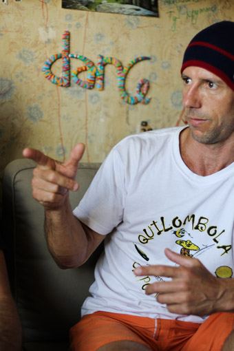
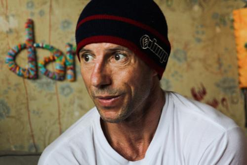

Лики Mestre Pinoquio
Бразильские мастера-капоэйристы в кадре — мечта телеоператора. Главное успевай следить, чтобы из кадра не вывалились, отчаянно жестикулируя. Вот и Mestre Pinoquio покорил не только разумными речами, но и мимикой, жестами и манерой начинать ответ на любой вопрос фразой: «Veja bem, veja bem…»
Самое вкусное и наглядное, конечно, на видео, а здесь фотоподборка.
Спасибо Sabotage Capoeira за организацию семинара и возможность сделать эти кадры.

